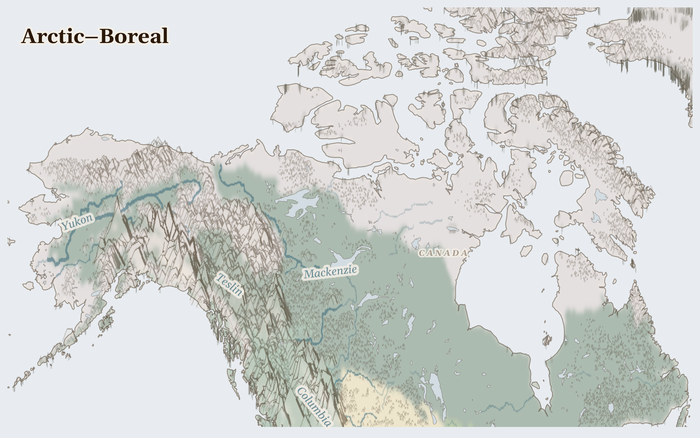

Arctic–Boreal1M people
ecology last verified 4 months ago
In the darkness of a January afternoon north of the Arctic Circle, a Gwich'in elder in Old Crow, Yukon, watches the thermometer read -38°C and knows that this cold, sharp and clean, is the cold that keeps the permafrost locked, the caribou routes frozen solid enough to walk, the rivers sealed safe for snowmachine crossings to the next community 200 kilometres away. She has watched these winters shorten by three weeks in her lifetime.
Lives Lived Here
Before dawn in Fort Chipewyan, Alberta — a community of 900 people accessible only by ice road in winter and boat or plane in summer — a Mikisew Cree fisher checks his nets in Lake Athabasca as he has done since childhood, as his father did, as his grandmother did. The walleye are smaller now. Some have tumours. He eats them anyway, because the grocery barge charges $14 for a head of lettuce and the ice road was open for only six weeks last winter. Downstream of his nets, the Athabasca River carries whatever the tailings ponds have released this season. He knows this. The community has been testing the water for twenty years. The results are not reassuring.
In Old Crow, Yukon, a Gwich'in mother packs dried caribou meat for her daughter's school lunch — country food from the Porcupine caribou herd, which migrates 2,400 kilometres between the Yukon and the Arctic National Wildlife Refuge in Alaska each year. The herd grew from a low of ~100,000 back to approximately 143,000 (2024 census), though the long-term trend from the 1989 peak of 178,000 reflects continued pressure. Her grandmother packed the same food, from the same herd, following the same migration route. The difference is the calving grounds: warmer springs bring earlier snowmelt, which brings earlier insect emergence, which means the caribou arrive at the coastal plain after the peak forage window has passed. The herd shrinks not from a single catastrophe but from a timing mismatch — the land's calendar shifting faster than the animals' instincts can follow.
In Newtok, Alaska, a Yup'ik family has been packing for nine years. Their village is relocating to Mertarvik, nine miles upriver, because the Ninglick River is eating the land beneath their houses at 70 feet per year — permafrost that once held the bank rigid is now thawing, and autumn storms that sea ice once deflected now hit the exposed coast at full force. Congress has appropriated money. FEMA has studied the problem. The Army Corps has drawn plans. The family is still packing. They have moved some belongings to the new site, which has a few houses, a generator, and no running water. Their old house has running water but may not have ground beneath it next autumn.
In Old Crow, Yukon, a Gwich'in mother packs dried caribou meat for her daughter's school lunch — country food from the Porcupine caribou herd, which migrates 2,400 kilometres between the Yukon and the Arctic National Wildlife Refuge in Alaska each year. The herd grew from a low of ~100,000 back to approximately 143,000 (2024 census), though the long-term trend from the 1989 peak of 178,000 reflects continued pressure. Her grandmother packed the same food, from the same herd, following the same migration route. The difference is the calving grounds: warmer springs bring earlier snowmelt, which brings earlier insect emergence, which means the caribou arrive at the coastal plain after the peak forage window has passed. The herd shrinks not from a single catastrophe but from a timing mismatch — the land's calendar shifting faster than the animals' instincts can follow.

Reference map. Country boundaries and features are approximate.
What Presses
The weight on Arctic–Boreal
North slope crude oil, zinc and lead concentrate leave the region — Iñupiat subsistence communities (Nuiqsut ringed by drilling; air quality, caribou access), Gwich'in Nation (Porcupine caribou calving grounds on the ANWR coastal plain), tundra and permafrost (thaw, subsidence, methane feedbacks).
Cascade Chains
Tar sands extraction → Tailings pond leaching into Athabasca River → Elevated cancer rates in Fort Chipewyan (Mikisew Cree, Athabasca Chipewyan First Nation; community health studies since 2006; 220 km² of tailings ponds adjacent to river system)
Arctic warming (4x global rate) → Permafrost thaw → Methane release → Accelerated warming → Further permafrost thaw (self-reinforcing feedback; 1,700 Gt carbon in permafrost; zombie fires burning underground through winter)
Sea ice decline (13% per decade) → Exposed coastline → Accelerated erosion of permafrost riverbanks → Village relocation (Newtok losing 70 ft/yr; Shishmaref, Kivalina, 31 Alaska communities requiring relocation; federal funding inadequate)
Boreal fire intensification → Carbon release from peat and permafrost → Caribou habitat loss → Decline of subsistence food systems (Porcupine herd 143,000 as of 2024, down from 178,000 peak; Bathurst herd from 450,000 to ~3,609 per 2025 survey; calving-forage timing mismatch)
Who Sustains This
Pathways Alliance (Canadian oil-sands net-zero coalition) · Member companies: Suncor, Cenovus, Imperial Oil, Canadian Natural Resources, MEG Energy, ConocoPhillips Canada (~95% of oil-sands production); Proposed ~$16.5B Cold Lake CCUS network (carbon-capture-and-storage pipeline + sequestration hub); Government of Canada Investment Tax Credit for CCUS (~50% of capital cost); Government of Alberta tailings, royalty, and TIER-system carbon-price frameworks
Driven by: We must produce responsibly sourced Canadian oil while leading the energy transition
The trap: The CCUS strategy converts the political problem of continued tar-sands expansion into a technological roadmap whose realisation requires the continued production it would offset. Tailings ponds — already the largest human-made structures visible from orbit — continue to leach into the Athabasca whose downstream Athabasca Chipewyan and Mikisew Cree communities show elevated cancer rates the federal monitoring framework documents but does not act on. The net-zero commitment is the licence to expand; the licence to expand is the deferral of the obligation the commitment names.
ConocoPhillips Alaska / Willow Project · Willow reserves (~600M barrels) on National Petroleum Reserve-Alaska, ~30 miles west of Teshekpuk Lake calving habitat; Alpine and Kuparuk legacy operations on the North Slope; Trans-Alaska Pipeline System (TAPS) tariff-funded transport to Valdez; Alaska Permanent Fund and state royalty pass-through to Iñupiat-corporate ASRC (Arctic Slope Regional Corporation)
Driven by: We must produce domestic energy responsibly while honouring our Indigenous and environmental commitments
The trap: The Willow approval was justified as a 'balance' — economic benefit to Iñupiat communities at Nuiqsut, mitigation of climate impact through scope downsizing — but the approval was the only operative choice; the mitigations operate within it. The Teshekpuk caribou herd that Gwich'in and Iñupiat hunting communities depend on faces the same calving-ground disruption regardless of which administration grants the permit. The 600 million barrels burnt at scope-3 erase the climate accounting the permit's surface-disturbance analysis performs. The project's legitimacy depends on framing one Indigenous community's economic-benefit stake against another Indigenous community's subsistence stake — the choice being made at federal scale, the contradiction being absorbed at local scale.
Naalakkersuisut (Government of Greenland) · Danish block grant (Bloktilskud — ~4.3 billion DKK/year, structurally the lever the sovereignty project seeks to escape); Greenland Mineral Strategy 2020–2024 licence revenues and exploration fees; Royal Greenland fishing-export earnings (cod, halibut, prawns); Active mineral projects: Kvanefjeld/Kuannersuit (uranium-thorium-REE, blocked by 2021 IA-led ban), Tanbreez (REE, sold to Critical Metals 2024), Citronen Fjord (zinc-lead), Aappaluttoq (ruby/sapphire)
Driven by: We must develop Greenland's mineral wealth to fund the path to full sovereignty from Denmark
The trap: The fiscal-independence-from-Denmark goal — long-standing, broadly supported across Greenlandic society — has only one viable funding instrument at scale, which is foreign-capital mineral extraction on subsistence-hunting territory. Each rare-earth or zinc project that gets approved underwrites the sovereignty narrative; each project that gets blocked (Kvanefjeld 2021, sustained by the 2022 IA-Siumut coalition) preserves the subsistence relationship the sovereignty narrative was meant to protect. The sovereignty whose funding extraction would provide is the sovereignty that extraction would have already transformed. The block grant the project is meant to replace is what currently funds the Inuit-language schools and health system that make the sovereignty project culturally coherent.
Three resource streams flow out of the Arctic-Boreal region — bitumen, shale gas, and industrial grain — worth hundreds of billions at destination markets. What does not leave is the methane, now releasing from thawing permafrost at rates that feed back into the warming that caused the thaw. The tailings ponds in Alberta will require remediation for centuries. The permafrost that held the ground stable for Indigenous communities will not refreeze in any human lifetime. The cost stays here; the profit does not. North Slope crude oil, zinc and lead concentrate leaving.
The permafrost is not a metaphor. It is the ground beneath the houses, the airstrips, the graves. When it thaws, everything built on the assumption that the ground would hold must be moved or lost. The Gwich'in and the Inuit did not build on an assumption — they built on knowledge of the land as it was. The land is becoming something else, faster than any community can relocate, and slower than any news cycle can sustain attention.
For Prayer
Last updated on 2026-07-20.
For the gifts of the far north — for the great silence of the tundra, for the caribou rivers and the winter dark and the endurance of the peoples who have made a life here for millennia. That plenty may not become forgetfulness.
For the oil drawn out of this coast to fuel distant markets, and the wealth it returns — and for the truth that the warming this fuel drives is felt here first and hardest. Teach us to trace the fuel gauge back to the thawing ground.
For the Iñupiat and Gwich'in and Yup'ik communities on the front line of a warming they did least to cause — villages like Newtok and Kivalina packing up to move as the sheltering ice thins and the ground gives way beneath their homes. For their right to remain whole peoples as they go.
For subsistence itself — the caribou, the seal, the fish that are food and culture and covenant across the north — as the seasons that governed them come loose. That the young still learn the hunt, and that there is still a hunt to learn.
For eyes to see the north as both a shared inheritance and a coast already going under; and for love that lets the warmth of the south become concern for the people of the ice.
O praise the Lord, all you nations; praise him, all you peoples. For great is his steadfast love towards us, and the faithfulness of the Lord endures for ever. Alleluia.
Lord of all power and might, the author and giver of all good things: graft in our hearts the love of your name, increase in us true religion, nourish us with all goodness, and of your great mercy keep us in the same; through Jesus Christ your Son our Lord, who is alive and reigns with you, in the unity of the Holy Spirit, one God, now and for ever.
Amen.
Seeds of Hope
The Gwich'in Steering Committee, formed in 1988 when the US government first proposed oil drilling in the Arctic National Wildlife Refuge, has maintained a 38-year campaign to protect the Porcupine caribou herd's calving grounds on the coastal plain of northeast Alaska. Their argument has never changed — the caribou are not a resource to be managed but a relative whose survival and theirs are the same question.
For Reflection
What connects your daily life to this crisis?
What would it mean to accept this contradiction—that your comfort and their suffering exist in the same global system—rather than trying to resolve it from the outside?
Looking Ahead
- Arctic sea ice minimum September -- each record low accelerates permafrost thaw, methane release, and coastal erosion for Yupik and Inuit communities whose villages are losing ground to the ocean
- Alberta tar sands tailings pond monitoring -- Imperial Oil's Kearl mine leak reporting requirements under renewed regulatory scrutiny; downstream Mikisew Cree and Athabasca Chipewyan health data due
- Polar vortex disruption events January-March -- Arctic warming buckles the jet stream, sending extreme cold south to temperate cities while leaving the Arctic itself anomalously warm
Carry This
What to bring with you from this briefing
Take Action
Organizations working at the nodes this briefing traces
Permanent participant in the Arctic Council representing the Gwich'in Nation across Alaska and northern Canada. Advocates for protection of the Porcupine caribou calving grounds in the Arctic National Wildlife Refuge against oil drilling.
Speaks for the communities whose subsistence livelihoods the briefing identifies as directly threatened — the Gwich'in depend on Porcupine caribou herds whose calving grounds overlap with proposed oil lease areas on Alaska's North Slope, making caribou migration routes and drilling concessions materially inseparable.
Canadian clean energy think tank producing detailed analysis of Alberta tar sands economics, tailings pond contamination, pipeline infrastructure, and transition pathways. Provides evidence-based policy recommendations on fossil fuel phase-out.
Quantifies the tar sands extraction the briefing traces — bitumen production volumes, tailings pond leakage into the Athabasca River, and downstream health impacts on Fort Chipewyan and Mikisew Cree communities whose water and fish are contaminated by the largest industrial project on Earth.
Arctic Council working group producing scientific assessments of pollution, climate change, and human health in the Arctic. Documents permafrost thaw, contaminant bioaccumulation, and black carbon deposition across the circumpolar region.
Provides the permafrost and contamination data the briefing's atmospheric and soil network analyses depend on — measuring methane release from thawing permafrost, mercury bioaccumulation in Arctic food chains, and the feedback loops between warming and infrastructure collapse across the boreal zone.
Works on Arctic conservation policy including shipping corridor regulation, offshore drilling moratoriums, and marine protected areas. Campaigns against industrial expansion into previously ice-covered waters opened by climate change.
Addresses the opening of Arctic shipping routes and mining frontiers the briefing documents — where retreating sea ice enables new mineral extraction, LNG shipping, and fishing in waters previously inaccessible, creating a feedback loop between the warming that melts ice and the industrial activity that accelerates it.
Umbrella organization representing Saami people across Norway, Sweden, Finland, and Russia. Advocates for reindeer herding rights, land rights, and self-determination in the face of mining, wind energy, and infrastructure projects on traditional Saami lands.
Represents the reindeer herding communities whose pastoral routes the briefing identifies as intersecting with Arctic mining concessions and wind farm developments — where green transition infrastructure and mineral extraction both threaten the same Indigenous land-based livelihoods.
Where this comes from (12 sources)
Tier 1 = UN agencies & peer-reviewed · Tier 2 = community voice & justice orgs · Tier 3 = corporate / unverified (require 2+ independent sources)
- NOAA, Arctic Report Card, 2024. https://arctic.noaa.gov/Report-Card
- National Snow and Ice Data Center, Arctic Sea Ice News and Analysis, 2024. https://nsidc.org
- Inuit Circumpolar Council, Circumpolar Inuit Declaration on Resource Development, 2024. https://www.inuitcircumpolar.com
- IPCC AR6, Polar Regions Chapter, 2021
- Arctic Council, Arctic Biodiversity Assessment, 2024. https://www.arctic-council.org
- Arctic Monitoring and Assessment Programme, Arctic Climate Change Update, 2024
- COSEWIC, Assessment and Status Report on Caribou (Rangifer tarandus), 2024. https://www.cosewic.ca
- Pembina Institute, Oil Sands Carbon Intensity Assessment, 2024. https://www.pembina.org
- Regional Aquatics Monitoring Program (RAMP), Athabasca River Basin Report, 2024
- Athabasca Chipewyan First Nation (ACFN), Community Health and Environment Report, 2014
- Scholten, R.C. et al., Overwintering fires in boreal forests, Nature 593, 2021. https://doi.org/10.1038/s41586-021-03437-y
- Turetsky, M.R. et al., Permafrost collapse is accelerating carbon release, Nature 569, 2019. https://doi.org/10.1038/s41586-019-1153-8
Generated 2026-07-24 · narrative prose AI-synthesized